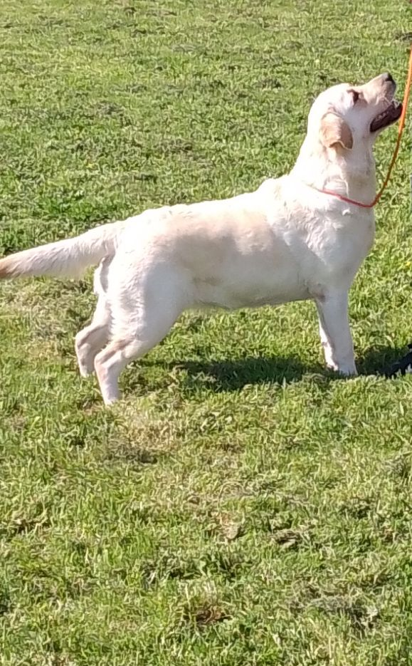
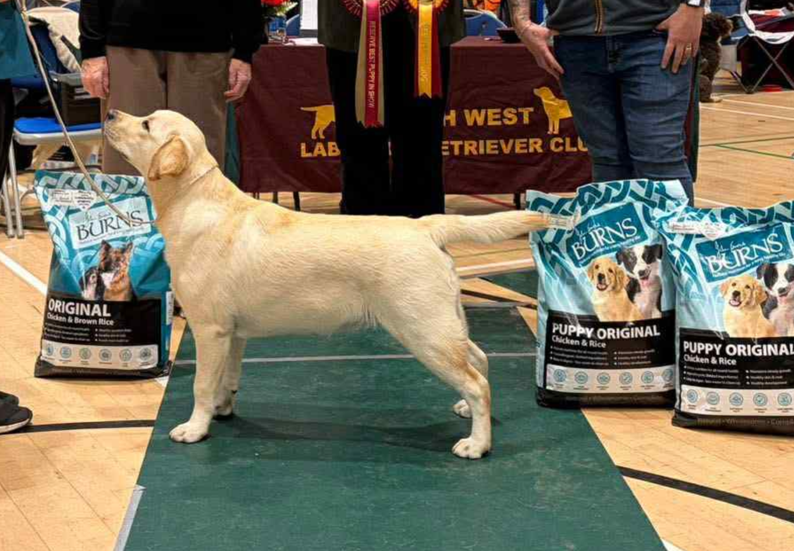
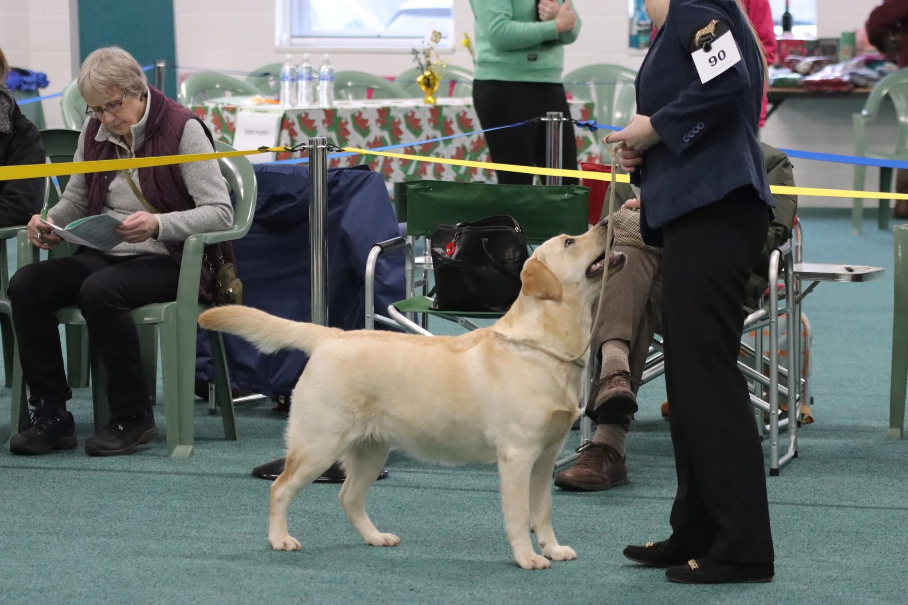

Bred · Shown · Loved
Where quality has its roots.
Eastdew Labradors is a small, dedicated kennel in rural Carmarthenshire, built around a simple belief: breed thoughtfully, raise carefully and always put the Labrador first.
Discover Eastdew →The Eastdew philosophy
Quality. Temperament. Type.
Small in numbers. Serious about the breed.
Our dogs are part of our family and our way of life. We care about soundness, character and the unmistakable Labrador type that makes the breed so special.
Meet our dogs →
The heart of Eastdew
Three individual Labradors.
One Eastdew family.

Candy
Eminala’s Kaos
The foundation bitch at the centre of the Eastdew story.

Comet
Eastdew Rewrite the Stars with Eminala JW
A young dog from Candy’s litter with Rusmairas Fisher.

Nova
Eastdew Sky Full of Stats over Eminala JW
Comet’s litter sister and another part of the next Eastdew chapter.
Health firstSoundness and welfare before everything else.
Shown with prideEnjoying the show ring and learning from it.
Home raisedDogs are family, companions and working partners.
Small by designThoughtful choices rather than producing more.